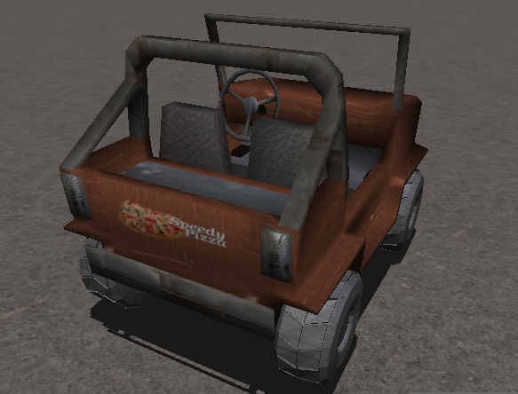
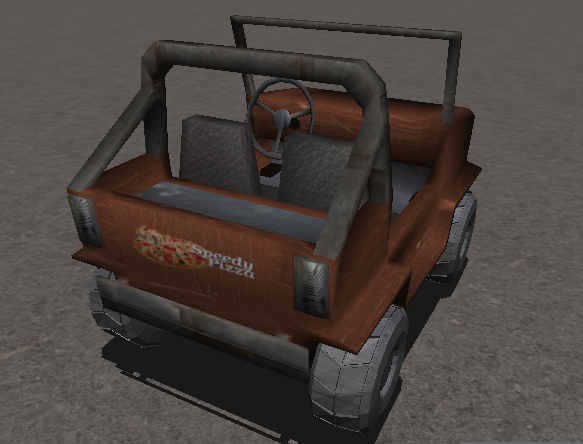

Fig. 1: screenshot dell'applicazione
Lo scopo del videogame realizzato consiste nell'effettuare il maggior numero possibile di consegne di pizze ai propri clienti in un tempo limitato (impostato a 2 minuti). Per raggiungere l'obiettivo, l'utente guiderà la jeep del fattorino di SpeedyPizza in una mappa quadrata che simula un ambiente urbano, evitando di collidere con le strutture presenti in essa per non essere rallentato durante le consegne. Per aumentare il livello di sfida e rendere l'azione di gioco più accattivante, nella mappa è anche possibile raccogliere durante le consegne una bombola di N20 (a.k.a. NOS), che raddoppierà la velocità del veicolo per 5 secondi. L'utente potrà organizzare i suoi percorsi per le consegne utilizzando la mappa 2D visualizzata nella finestra di gioco, dove oltre alla posizione della vettura e alla disposizione degli ostacoli, vengono mostrate la posizione della pizza/cliente e quella del NOS. Inoltre, nel pannello in alto a sinistra è sempre visibile il tempo rimanente, il numero di consegne effettuate e il tempo di esaurimento dell'effetto del NOS.
Fig. 1: screenshot dell'applicazione

Fig. 2: esempio di Mappa 2D
La jeep di SpeedyPizza è stata progettata sulla base di un semplice modello reperito in rete, modificandone leggermente la struttura per migliorarne l'aspetto. Il modello è stato scomposto in 3 diversi oggetti: il telaio, la ruota anteriore e quella posteriore (poi duplicate e riposizionate nella fase di rendering). Alle superfici della vettura sono state applicate diverse texture, in base ai materiali che vanno a comporre l'oggetto per darle un aspetto più realistico, e sul retro è stato applicato il logo del gioco.
 
Fig. 3: visuale frontale e posterirore della jeep
Sono state progettate in Blender quattro semplici costruzioni/strutture, ovvero:
Fig. 4: le 4 tipologie di strutture
Il modello della pizza e le texture associate sono stati reperiti in rete. Nella dinamica di gioco, per raccogliere la pizza e poterla consegnare è necessario guidarci abbastanza vicino con la vettura (la vicinanza è determinata con la relativa funzione di distanza). Per attirare l'attenzione dell'utente, il modello della pizza viene fatto ruotare costantemente sull'asse Y durante il rendering della scena di gioco.
Fig. 5: il modello della pizza
Il modello della bombola è stato reperito in rete, ma la texture in questo caso è stata applicata generando automaticamente le coordinate con la modalità GL_SPHERE_MAP e utilizzando una texture di tipo "environment mapping", per simulare i riflessi della superficie lucida dell'oggetto. Come per la pizza, anche questo modello viene fatto ruotare su sè stesso durante il rendering della scena e bisogna guidarci vicino per poterlo raccogliere e attivare l'effetto del NOS.
Fig. 6: il modello del NOS
Il modello del Cliente e le texture associate sono stati reperiti in rete. Tramite Blender, si è modificato il modello (mediante l'applicazione di bones) in modo da ricordare la posa di un cliente che con la mano fa cenno al fattorino per la consegna.

Fig. 7: il modello del cliente
Il modello del banner è stato reperito in rete, ma le texture sono state modificate in modo da mostrare una foto dello sviluppatore insieme a un gruppo di amici mentre si trovava nelle campagne del Salento.
Fig. 8: il banner pubblicitario
La mappa di gioco consiste in una matrice quadrata di 25x25 "piastrelle" (nello specifico, superifici di tipo GL_QUAD), ognuno dei quali può ospitare uno degli oggetti tra:

Fig. 9: visuale dall'alto di un esempio di generazione della mappa di gioco
Il posizionamento degli ostacoli viene effettuato utilizzando una matrice di posizioni di N_CELLS*N_CELLS (N_CELLS = 25). Dapprima viene riempito un vettore di N_BUILDINGS elementi,
dove N_BUILDINGS rappresenta il numero di palazzi/ostacoli che vogliamo posizionare sulla mappa (N_BUILDINGS << N_CELLS). Ognuno degli elementi del vettore
è una mesh corrispondente a una delle 4 tipologie di palazzi (la tipologia è scelta in maniera random tra quelle disponibili).
Si procede poi al riempimento della matrice in questo modo:
per ogni palazzo, si genera una posizione random nella matrice e, se libera, si assegna l'indice del palazzo a quella posizione. Si procede a posizionare
altri 8 palazzi intorno ad esso (sempre se ogni posizione risulti libera). Così facendo, per ogni posizione scelta in maniera casuale ci saranno altri palazzi nelle
piastrelle che lo circondano, creando dei "centri di aggregazione" che visivamente ricordino una disposizione realistica di una ambiente urbano e
creando degli spazi fra di essi che possano ricordare delle strade.
Nella computazione dello step fisico di riposizionamento della vettura, si verifica che la posizione di uno qualsiasi dei vertici della BBOX del telaio non sia sovrapposto all'area 2D (sul piano XZ) di ognuna delle costruzioni presenti nella mappa. Se ciò avviene per una qualsiasi delle strutture, allora l'accelerazione della vettura viene settata a 0 in tutte le direzioni, avendo come effetto quello di fermare la corsa della vettura. Questo semplice meccanismo può essere utilizzato in quanto le costruzioni sono orientate tutte allo stesso modo e aggiornando i vertici delle BBOX così:
La distanza della vettura dagli oggetti viene calcolata con la distanza euclidea tra i due rispettivi centri della BBOX, i quali vengono aggiornati in base alla posizione attuale degli oggetti nel mondo.